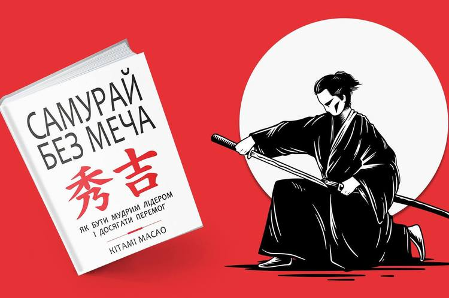
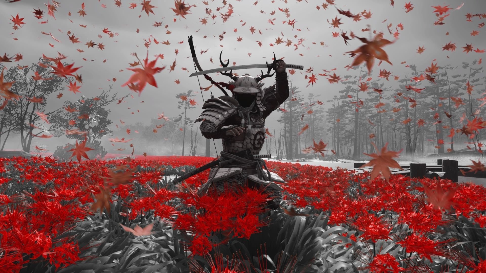
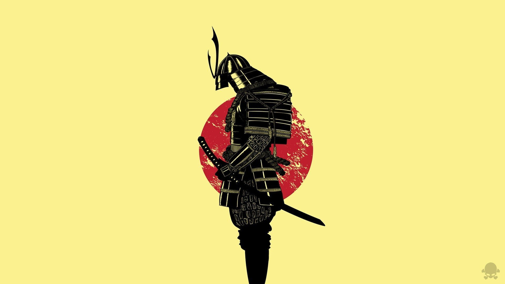

Samurai
  Description of the history
Samurai
A samurai is a representative of the military state in Japan in the 10th-19th centuries. During the Middle Ages, the samurai displaced the Japanese aristocracy from the place of the country's leading political power and created their own system of managing society - the shogunate. The content of the term "samurai" changed according to the circumstances of a specific historical era, but its component, which associated samurai with war or military service, remained intact.
Samurai are mentioned as simple servants in the household of nobles. In the sources of the 11th century, a samurai is an armed servant whose task is to protect a suzerain - a prince, an official, an aristocrat, the abbot of a Buddhist temple or a priest of a Shinto shrine.
In the 13th century, the saburai were a separate estate, the characteristic features of which were the presence of land ownership and servants, as well as the performance of military service as a horseman.
In the 15th and 16th centuries, when Japan plunged into an era of continuous internecine wars, any soldier began to be called "saburaya". He could be a noble commander, an armed peasant, and even a thug robber. At the same time, the phonetic change of the word "saburai" took place - it was pronounced as "samurai". This change was finally fixed in writing at the beginning of the 18th century.
In the Edo period (1603-1867), the first legal definition of "samurai" appears. They meant elite servants of the shogun, provincial lords and their most significant vassals. The rest of the former military men and soldiers of the country, who were part of the most privileged status of "husbands", were not called "samurai", but "soldiers" - "bushi".
Today, all military personnel of medieval and modern Japan are often called samurai. This approach can be found in popular science or fiction. However, in professional scientific works, the use of the term samurai is more balanced, since the content load of the word "samurai" in a specific historical period is taken into account.
Bushy
The term "samurai" is often synonymous with the word "bushi" ("military man", "warrior"). However, these terms are not exactly the same.
The first use of the word "bushi" is in the "Continuation of the Annals of Japan" and has nothing to do with the phenomenon of samurai. The term "bushi" is used as an antonym for the word "civil official". Only from the end of the 11th century, Saburai servants began to be associated with the military - "bushi".
In the middle of the 12th century, the semantic load of the words "samurai" and "bushi" coincided. However, already at the end of the same century, in connection with the drafting of the legislation of the first shogunate, the scope of application of these concepts was clearly demarcated. The term "samurai" denoted an elite warrior, and the word "bushi" denoted the rest of the Japanese army.
In the 15th and 16th centuries, these two words again became synonymous, but after the establishment of the Tokugawa shogunate and the creation of new legislation, the concept of "samurai" was again attributed to the wealthiest strata of Japanese society. That is, in the 17th and 19th centuries, every soldier from the rank of "husbands"(士) belonged to a bushi, but not every bushi could be a samurai.
Today, both concepts — "samurai" and "bushi" — are often used interchangeably, but this practice is insufficiently justified in view of the history and semantic load of both terms.
Play game
Select items
Items are selected: 0